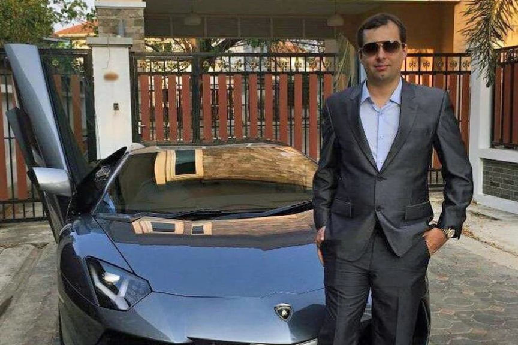
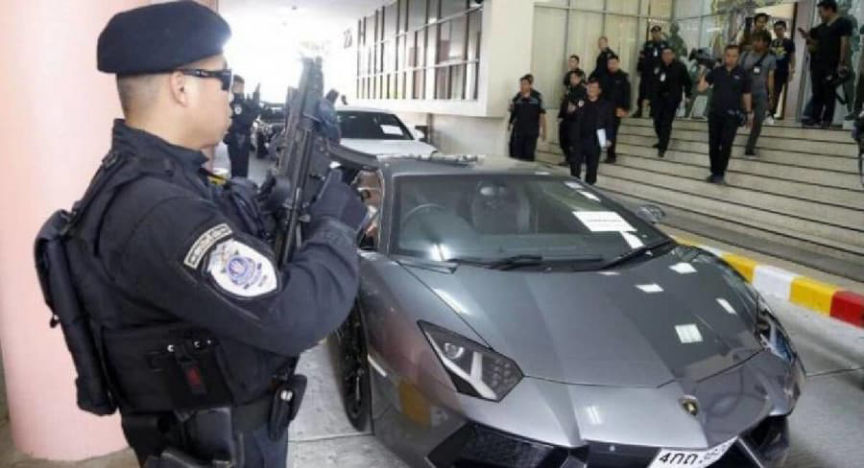
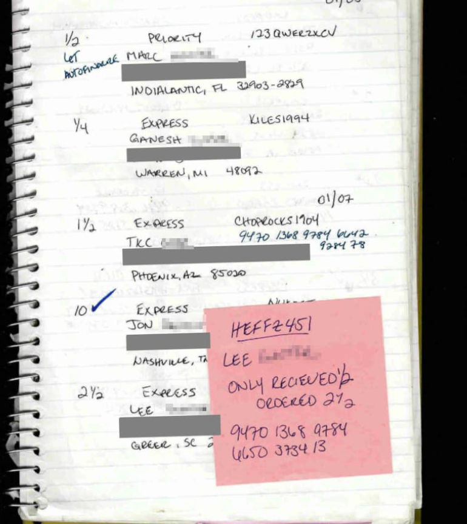
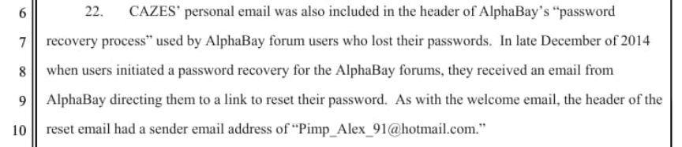
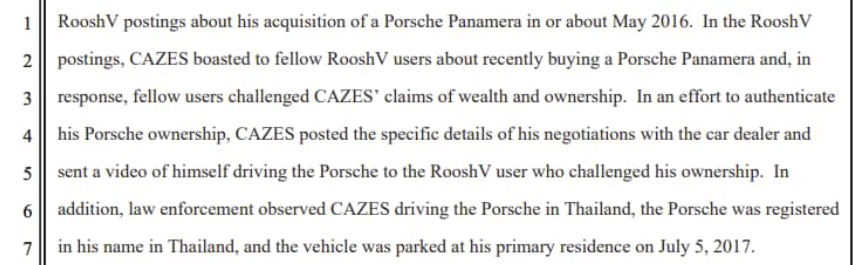
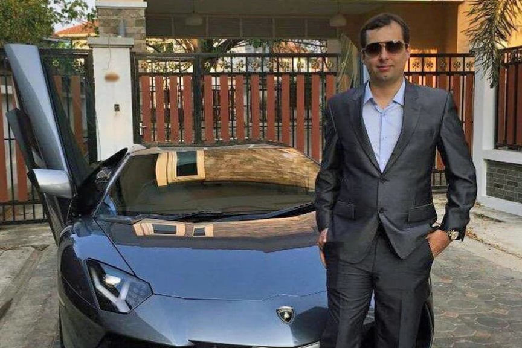
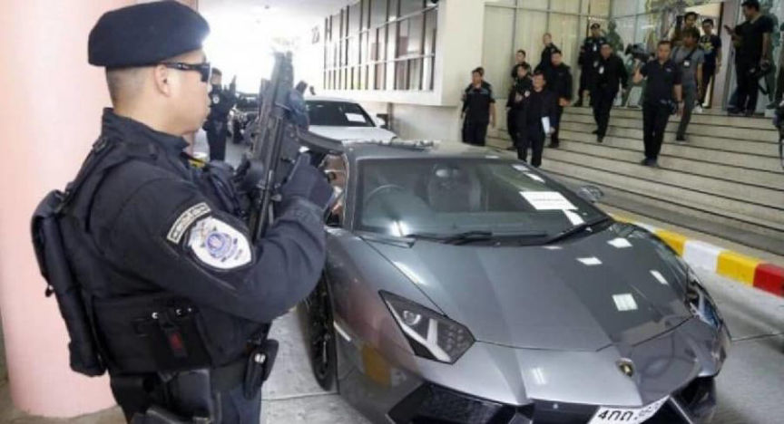
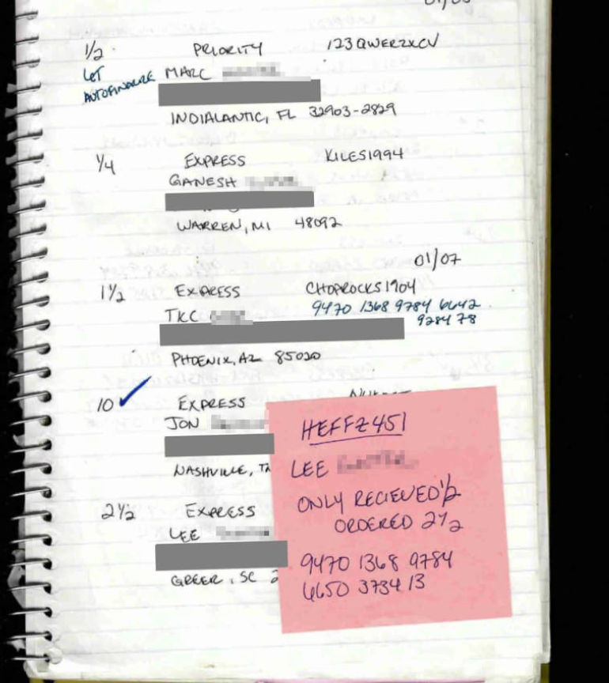
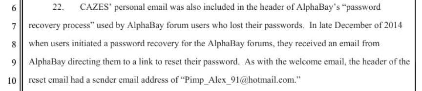
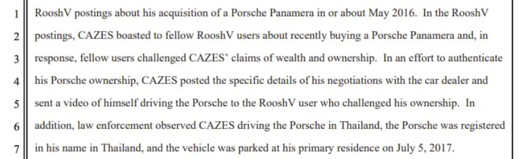

Thai Court Orders the Seizure of $12m in AlphaBay Assets
A court in Thailand has ordered the seizure of almost $12 million in assets owned by the late Alexandre Cazes, the alleged administrator of the AlphaBay darkweb marketplace.

Bangkok’s Talingchan district court ordered the seizure of assets worth 413 million baht ($11,949,196) from the late Alexandre Cazes. After Cazes’ arrest in 2017, authorities in Thailand seized 911 Bitcoins and turned them over to the United States. The Office of the Attorney General (OAG) will be asking the U.S. to return the Bitcoin, according to the OAG’s foreign affairs director, Jumpol Phansamrit.

Officers from law enforcement agencies in the U.S. and local police in Thailand raided Cazes’ home on July 5, 2017. Cazes faced charges in the Eastern District of California stemming from his alleged role in the creation and administration of AlphaBay, including:[list]*one count of conspiracy to engage in racketeering;*one count of conspiracy to distribute narcotics;*six counts of distribution of narcotics;*one count of conspiracy to commit identity theft;*four counts of unlawful transfer of false identification documents;*one count of conspiracy to commit access device fraud;*one count of trafficking in device making equipment; and*one count of money laundering conspiracy.[/list]

According to the Department of Justice, Cazes hanged himself in a jail in Thailand on July 12, 2017. Days after the apparent death of Cazes, the U.S. filed a complaint for forfeiture of assets owned by Cazes. They also requested the forfeiture of assets owned by, Cazes’ wife, Sunisa Thapsuwan, and Thapsuwan’s parents. A court ruled in favor of prosecutors in all AlphaBay-related forfeiture cases.

Lists of forfeited assets include, among many other properties and holdings:[list]*2013 Lamborghini Aventador LP700-4;*Porsche Panamera S;*BMW Motorcycle;*All funds on deposit at Bangkok Bank, held in the name of Alexandre Cazes;*All funds on deposit at Bangkok Bank, held in the name of Sunisa Thapsuwan;*1,605 Bitcoin moved from one of Cazes’ wallets to a government-controlled address;*8,300 Ethereum moved from one of Cazes’ wallets to a government-controlled address;*3,691 Z-Cash moved from one of Cazes’ wallets to a government-controlled address;*All Monero found on Cazes’ computers;*Hundreds of Bitcoin, Ethereum, and Monero seized from AlphaBay servers; and*Three houses worth almost $9 million.[/list]

Although a U.S. court ordered the forfeiture of Cazes’ assets several years ago, courts in Thailand waited until April 27, 2022, to issue a similar judgment.
<picture><source srcset="https://darknetlive.com/post/thai-court-steals-millions-from-good-boy-did-not-do-nothin/avif/rooshv.avif" type="image/avif"><source srcset="https://darknetlive.com/post/thai-court-steals-millions-from-good-boy-did-not-do-nothin/webp/rooshv.webp" type="image/webp"></picture>
According to the OAG foreign affairs director, authorities in Thailand will auction the seized assets. The OAG plans to share the money with the U.S. but has not yet discussed this with their U.S. counterparts.
US v Cazes indictment pdf<br>US v Cazes complaint for forfeiture in rem pdf<br>[em]Court orders seizure of late darknet baron Cazes’ assets in Thailand[/em] archive.is, archive.org, nationthailand.com
FWIW:[list]*The AlphaBay mentioned in the article is not the AlphaBay that is active today. The administrator of today’s AlphaBay claims to be the co-administrator of the original AlphaBay (DeSnake)*I am not sure if anyone has verified the complaint’s claim about Cazes’ personal email address appearing in the header of an AlphaBay email. It reads like parallel construction. Cazes’ other mistakes, such as the posts on various forums, are easily verifiable.[/list]
The AlphaBay seizure banner.
Bangkok’s Talingchan district court ordered the seizure of assets worth 413 million baht ($11,949,196) from the late Alexandre Cazes. After Cazes’ arrest in 2017, authorities in Thailand seized 911 Bitcoins and turned them over to the United States. The Office of the Attorney General (OAG) will be asking the U.S. to return the Bitcoin, according to the OAG’s foreign affairs director, Jumpol Phansamrit.

Prosecutors in the U.S. want to steal a Lamborghini owned by the late Alexandre Cazes
Officers from law enforcement agencies in the U.S. and local police in Thailand raided Cazes’ home on July 5, 2017. Cazes faced charges in the Eastern District of California stemming from his alleged role in the creation and administration of AlphaBay, including:[list]*one count of conspiracy to engage in racketeering;*one count of conspiracy to distribute narcotics;*six counts of distribution of narcotics;*one count of conspiracy to commit identity theft;*four counts of unlawful transfer of false identification documents;*one count of conspiracy to commit access device fraud;*one count of trafficking in device making equipment; and*one count of money laundering conspiracy.[/list]

Thai police seized Cazes' possesions in 2017 but courts waited until 2022 to rule on the matter.
According to the Department of Justice, Cazes hanged himself in a jail in Thailand on July 12, 2017. Days after the apparent death of Cazes, the U.S. filed a complaint for forfeiture of assets owned by Cazes. They also requested the forfeiture of assets owned by, Cazes’ wife, Sunisa Thapsuwan, and Thapsuwan’s parents. A court ruled in favor of prosecutors in all AlphaBay-related forfeiture cases.

Cazes owned an Aventador, a Panamera S, and a BMW bike. His wife owned the Mini Cooper.
Lists of forfeited assets include, among many other properties and holdings:[list]*2013 Lamborghini Aventador LP700-4;*Porsche Panamera S;*BMW Motorcycle;*All funds on deposit at Bangkok Bank, held in the name of Alexandre Cazes;*All funds on deposit at Bangkok Bank, held in the name of Sunisa Thapsuwan;*1,605 Bitcoin moved from one of Cazes’ wallets to a government-controlled address;*8,300 Ethereum moved from one of Cazes’ wallets to a government-controlled address;*3,691 Z-Cash moved from one of Cazes’ wallets to a government-controlled address;*All Monero found on Cazes’ computers;*Hundreds of Bitcoin, Ethereum, and Monero seized from AlphaBay servers; and*Three houses worth almost $9 million.[/list]

The forfeiture complaint details OPSEC mistakes made by Cazes.
Although a U.S. court ordered the forfeiture of Cazes’ assets several years ago, courts in Thailand waited until April 27, 2022, to issue a similar judgment.
<picture><source srcset="https://darknetlive.com/post/thai-court-steals-millions-from-good-boy-did-not-do-nothin/avif/rooshv.avif" type="image/avif"><source srcset="https://darknetlive.com/post/thai-court-steals-millions-from-good-boy-did-not-do-nothin/webp/rooshv.webp" type="image/webp"></picture>
Roosh is no longer a “PUA” and now blogs at rooshv.com
According to the OAG foreign affairs director, authorities in Thailand will auction the seized assets. The OAG plans to share the money with the U.S. but has not yet discussed this with their U.S. counterparts.
US v Cazes indictment pdf<br>US v Cazes complaint for forfeiture in rem pdf<br>[em]Court orders seizure of late darknet baron Cazes’ assets in Thailand[/em] archive.is, archive.org, nationthailand.com
FWIW:[list]*The AlphaBay mentioned in the article is not the AlphaBay that is active today. The administrator of today’s AlphaBay claims to be the co-administrator of the original AlphaBay (DeSnake)*I am not sure if anyone has verified the complaint’s claim about Cazes’ personal email address appearing in the header of an AlphaBay email. It reads like parallel construction. Cazes’ other mistakes, such as the posts on various forums, are easily verifiable.[/list]